НАШЕ МЕНЮ
Холодні страви
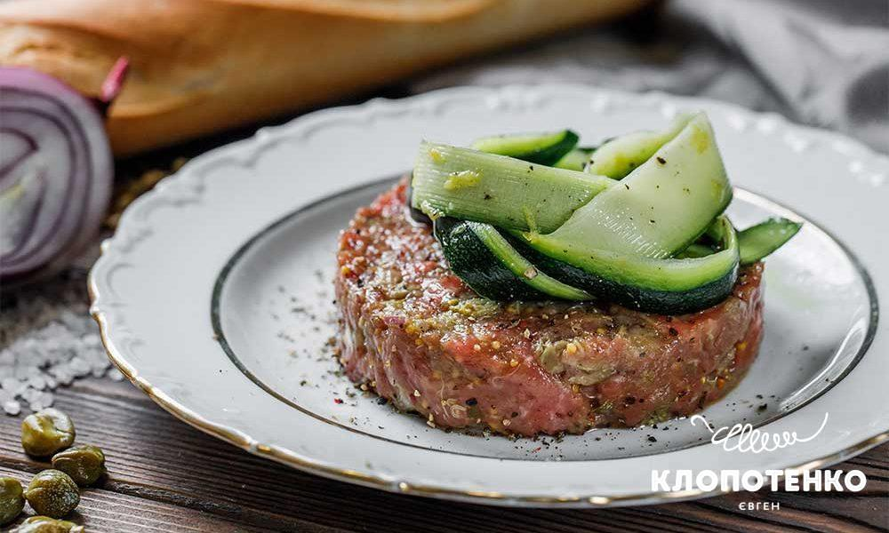
Ніжна вирізка, каперси, в'ялені томати, повітряний мус із пармезану.
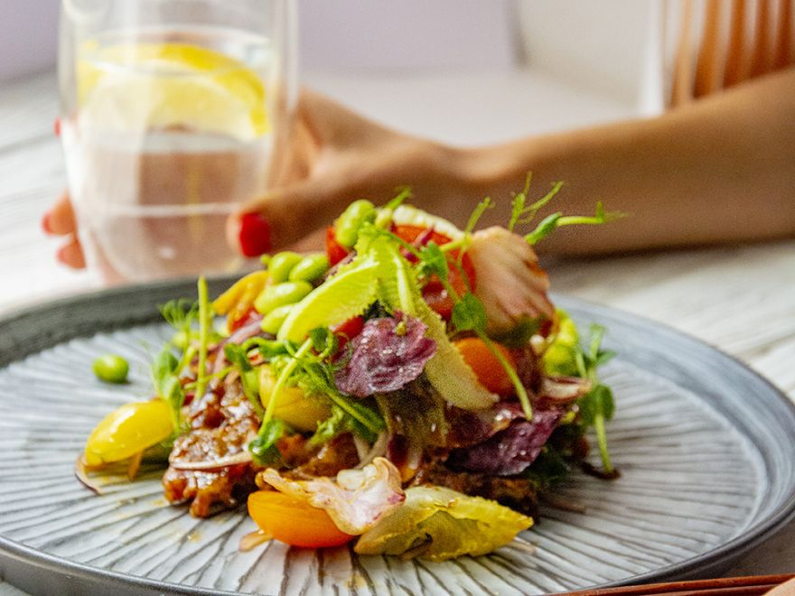
Філе качки, мікс салатів, свіжий інжир, карамелізовані горіхи, бальзамік.
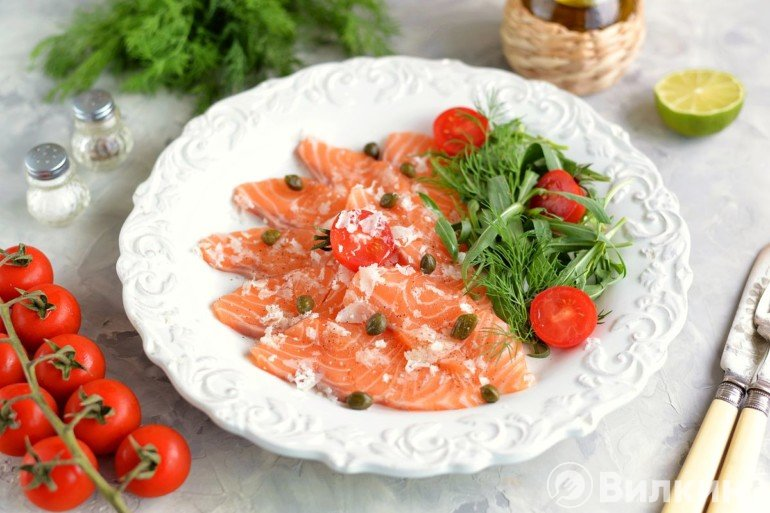
Тонкі слайси лосося, каперси, рукола, оливкова олія, сік лимона.
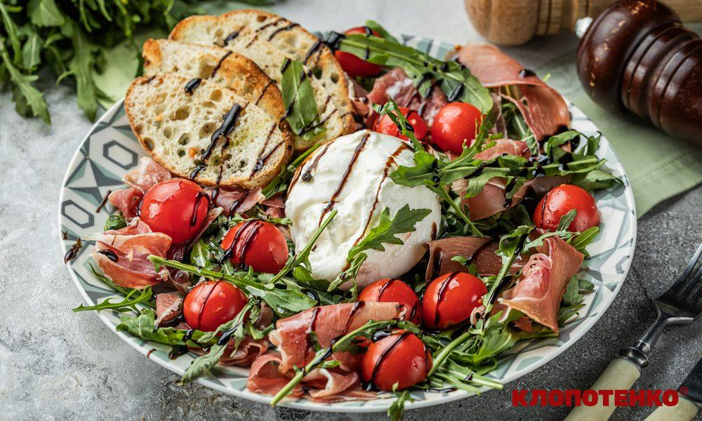
Вершковий сир бурата, стиглі томати чері, соус песто, базилік.
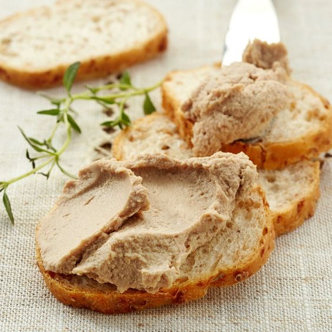
Ніжний паштет з цибулевим конфітюром та хрусткими грінками багету.
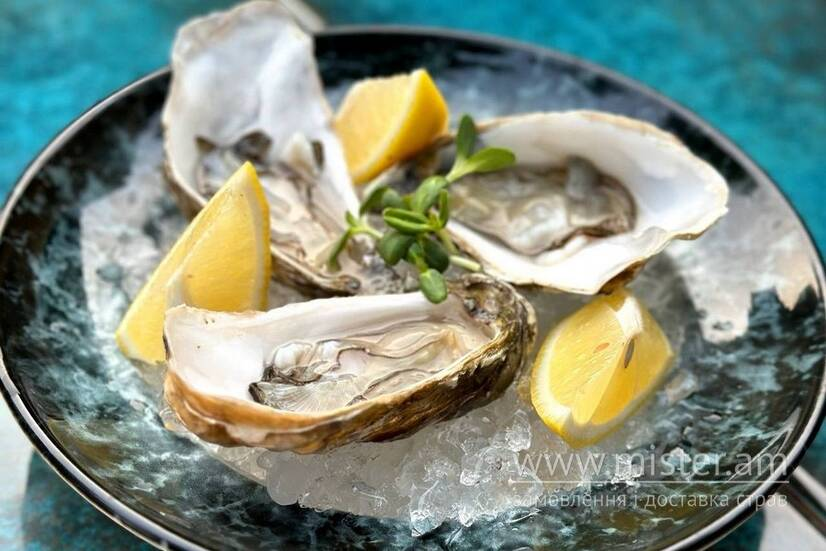
Устриці Фін де Клер, подаються на льоду з лимоном та винним соусом.
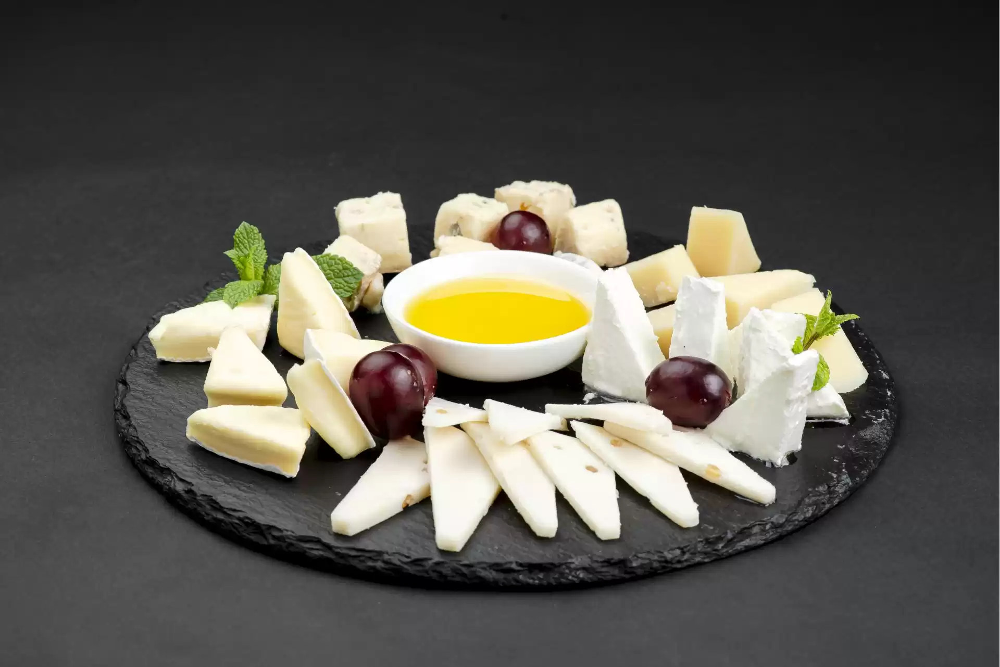
Пармезан, Дорблю, козячий сир, брі, подаються з медом та трюфельним горіхом.
Тонко нарізана запечена телятина під ніжним соусом із тунця та каперсів.
Гарячі страви
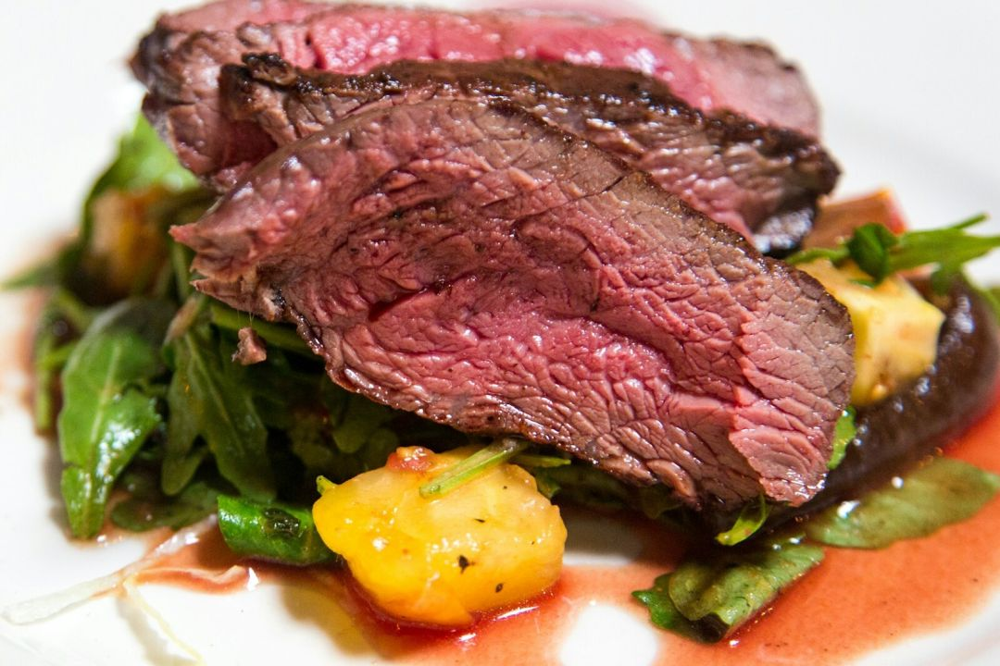
Преміальна яловичина на вугіллі з ароматним трюфельним соусом.
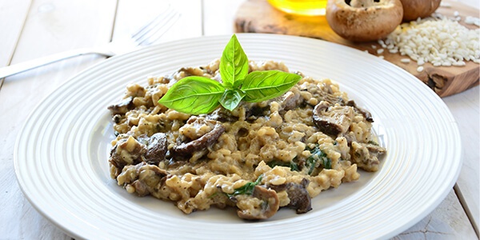
Ризото з чорнилом каракатиці, тигровими креветками та пармезаном.
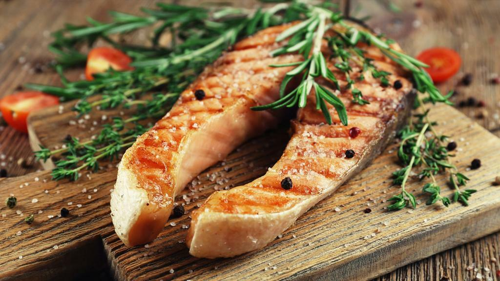
Соковитий лосось су-від, спаржа, лимонно-вершковий соус.
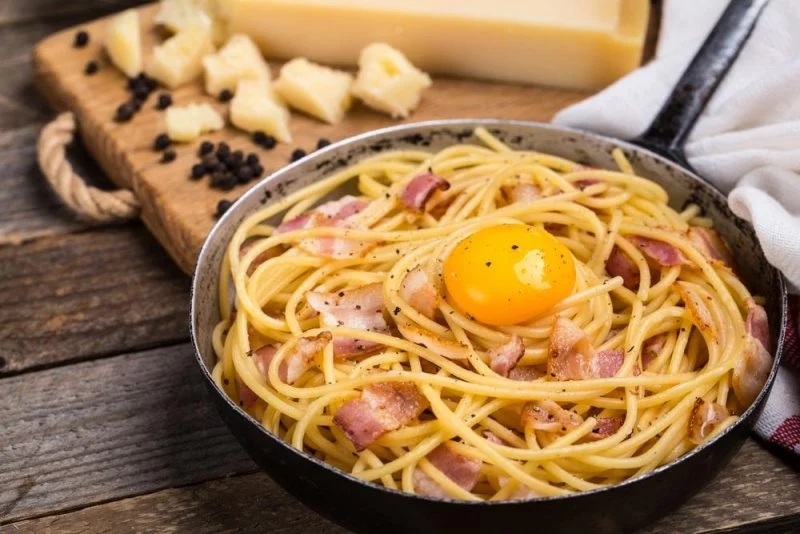
Домашня паста вершковий соус бекон та сирий жовток.
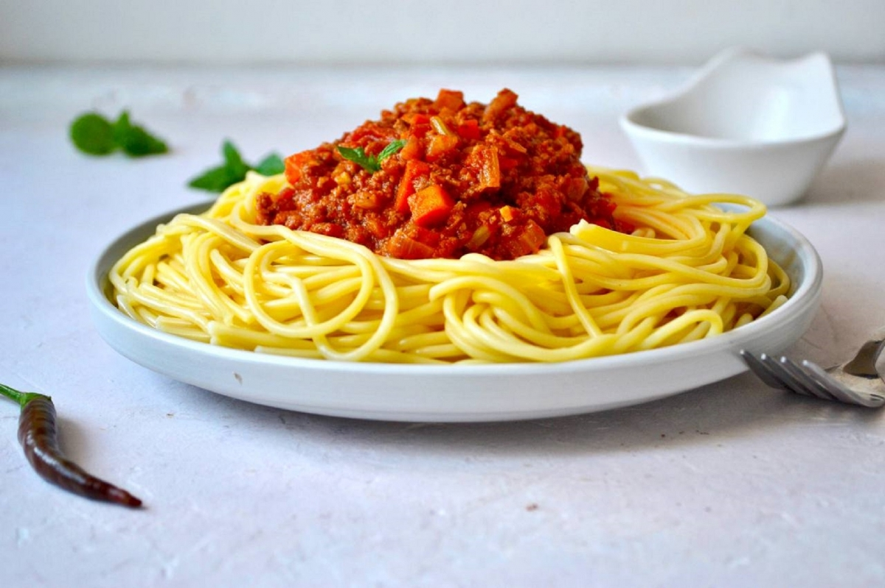
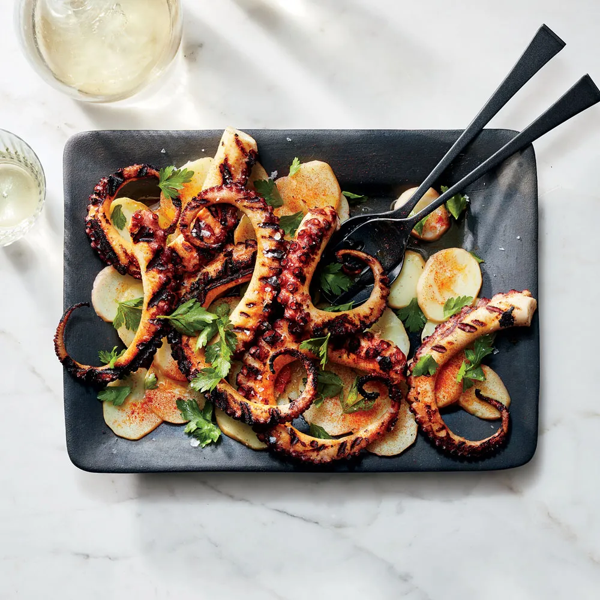
Ніжний щупалець восьминога з бейбі-картоплею та соусом ромеско.
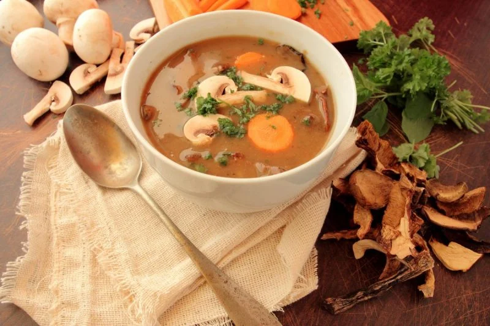
Ароматний суп-пюре з лісових грибів, вершків та трюфельної олії.
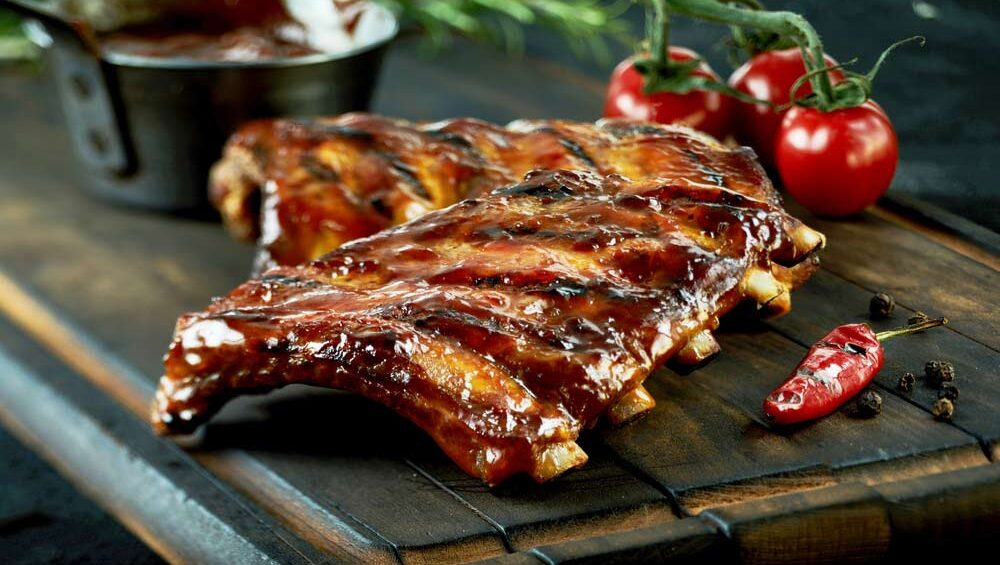
Карамелізовані реберця в гостро-солодкому соусі BBQ з маринованою цибулею.
Десерти

Теплий фондан, рідка шоколадна серцевина, лавандове морозиво.
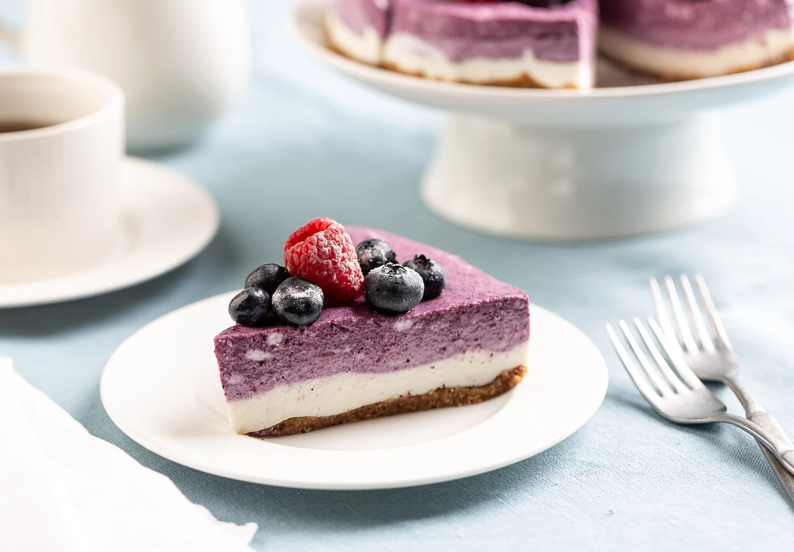
Ніжний Сан-Себастьян із карамельною скоринкою та чорничним кюлі.
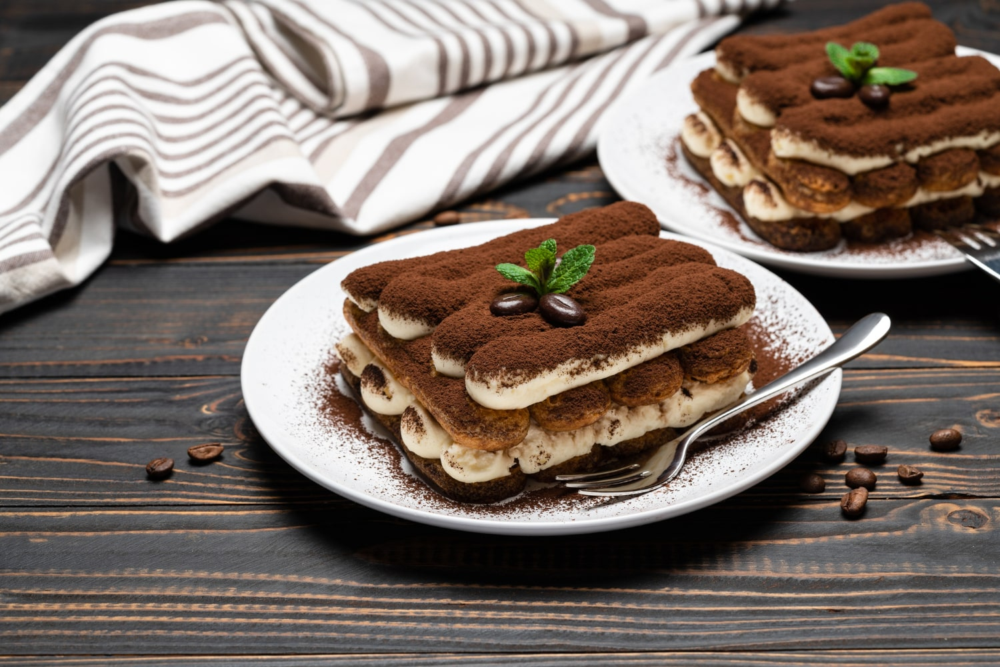
Мус маскарпоне, савоярді з еспресо та кавовим лікером Kahlua.
Асорті смаків: солона карамель, фісташка, дорблю-груша та чорна смородина.
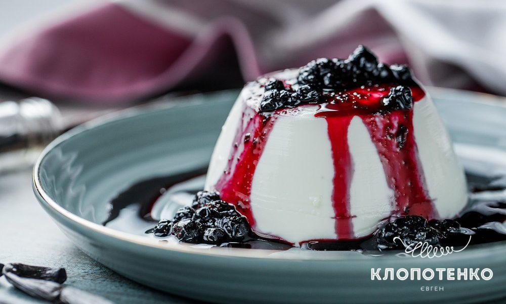
Легкий десерт на кокосовому молоці з пюре зі свіжого манго та маракуї.
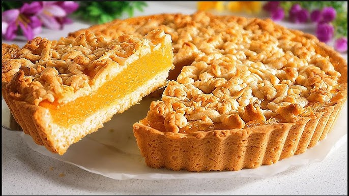
Пісочна основа, кислий лимонний курд та ніжна обпалена італійська меренга.
Напої
Темний ром, ожиновий лікер, активоване вугілля, сік лайма.
Натуральне чорничне пюре, лавандовий сироп, содова, лід.
Подвійне еспресо, гаряче кокосове молоко, легка пінка.
Порція вишуканого шотландського віскі з легким торф'яним післясмаком.
Японський зелений чай матча найвищого ґатунку на мигдалевому молоці.
Преміальне червоне сухе вино врожаю тосканських виноградників.